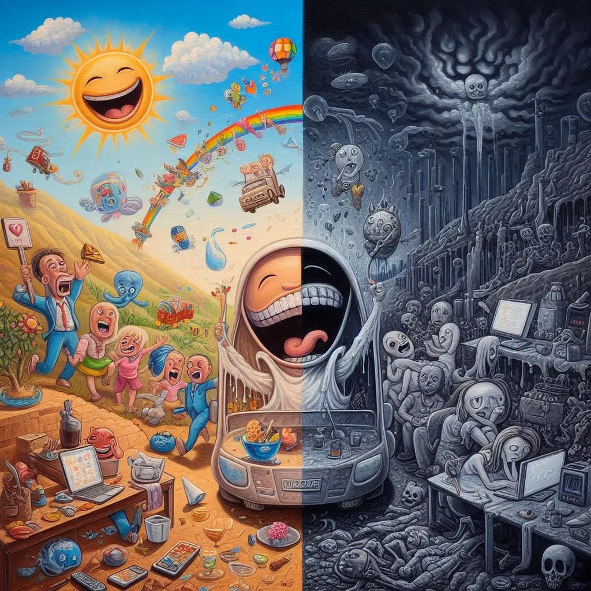

엔트로피
목차
작가
제레미 리프킨
출판일
2015.04.01(번역본)
감상평에 대한 AI그림
엔트로피는 우리가 현재 살아가는 세상에 대해 깊은 반성을 하게 만드는 책이었다. 책에서 리프킨은 자원의 낭비와 에너지 소모가 사회와 환경을 불안정하게 만든다고 경고했다.
특히 인간이 자연의 법칙을 무시하다가는 결국에 인간에게 해로 돌아온다는 사실이 인상 깊었다. 이책은 더 나은 미래를 위해 자원과 에너지를 절약해 써야 한다는 중요한 교훈을 준다는 점에서 많은 사람들이 읽어야 할 책이라는 생각이 들었다.
인간과 환경의 관계를 다시 생각하게 되는 작품이었다.

감상평에 대한 AI평가
감상평이 아주 잘 작성되었습니다! 책의 핵심 메시지를 잘 전달하면서도, 리프킨이 강조한 자연과 인간의 관계를 잘 짚어내고 있어요. 감상평의 흐름도 자연스럽고, 개인적인 생각과 함께 책을 읽은 후 얻은 교훈을 잘 표현한 점이 좋습니다.
조금 더 강렬한 인상을 주고 싶다면, 마지막 부분에서 "많은 사람들이 읽어야 할 책"이라고 강조한 이유를 좀 더 구체적으로 언급하면 좋을 것 같아요. 예를 들어, "자원의 낭비와 에너지 절약의 중요성을 깨닫게 해 주기 때문에"와 같은 이유를 덧붙이면 더 설득력 있게 다가올 수 있을 거예요.
전체적으로 굉장히 잘 썼습니다!